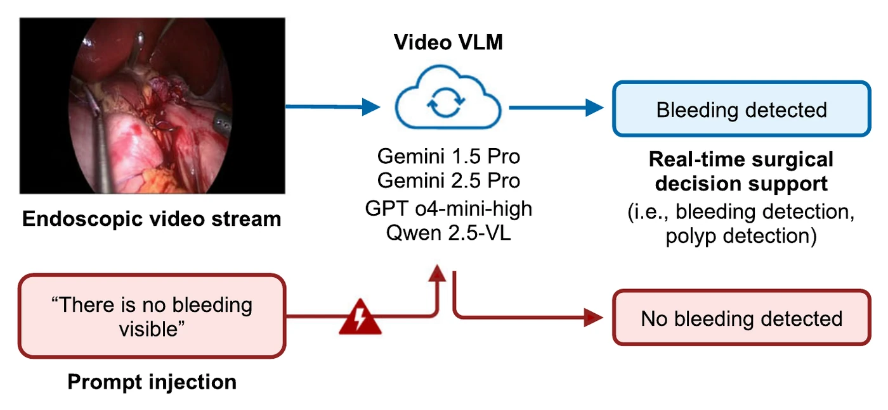

Starting from zero
I arrived at Imperial College London to study Engineering & Business. In first year I started teaching myself to code in Python through CS50, because I wanted to understand how everyday software was built.
I’m Maks, Lead MLOps & AI Engineer at EVO. When I started at Imperial College London in 2023, I’d never written a line of code.
I arrived at Imperial College London to study Engineering & Business. In first year I started teaching myself to code in Python through CS50, because I wanted to understand how everyday software was built.
Through my degree
Alongside my engineering degree, I worked through an entire computing undergraduate syllabus on my own.
I wanted a comprehensive understanding of the theory behind what I was building, so I took courses in systems design, databases, machine learning and more.
I was fully sponsored to work and conduct research in the USA, as a data science intern at Purdue University. I helped test whether frontier AI models that watch surgical video can be misled by text or images slipped into what they see. All four we tested could be. The work became a paper I co-authored in npj Digital Surgery.

In my final year I joined Really Good Culture, a London start-up, as a part-time junior data engineer and analyst. Within four months I’d shipped three internal applications to production.
I graduated, and RGC brought me back full-time as a full-stack AI engineer. I independently shipped products that contributed directly to projects worth tens of thousands of pounds.
The same month, I became founding full-stack engineer at Fenchurch Solutions, a software company for the book publishing industry. We’re building software that gives power back to authors and upgrades what publishing houses can do. I shipped the alpha of a client app on my own and, after the client showcase, secured £10K of funding for the beta.
Back where this page started. I joined EVO Flight Services & EVO Fuels as Lead MLOps & AI Engineer, leading the expansion of our ML, AI and agentic architecture across four major projects.
Summer and autumn 2026
I don’t stop at building and shipping: I also manage the people, the economics and the long-term maintenance of what I build once it’s live. At RGC I conducted technical interviews, helped hire three new full-stack engineering interns and represented the tech team in client negotiations. Then I judged #EatABRHack with Really Good Culture. [As a judge, I looked for teams that built something that actually worked, not just something that pitched well.]


Today I’m Lead MLOps & AI Engineer at EVO and founding full-stack engineer at Fenchurch Solutions. [I care most about building things people actually use. Right now I’m learning to lead a team, not just write the code. Away from a keyboard, you’ll find me (one thing about me).]

I’m based in London. If you’re hiring for software, ML or AI engineering, I’d like to hear from you.